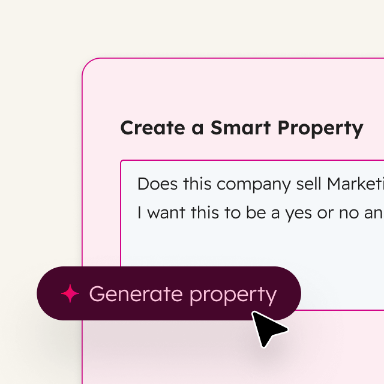

Marketing Hub®
Attract and convert the right leads. Run campaigns, personalize content, and track it all.
Learn moreHUBSPOT AGENTIC CUSTOMER PLATFORM
Unite marketing, sales, and customer service on one agentic customer platform that delivers results fast.
Connected data and tools make it easier to know, do, and connect everything across your business.
Powered by AI
Disconnected tools and data slow you down. HubSpot connects everything — and everyone — in one place to make growing a business easier than you think.
Attract and convert the right leads. Run campaigns, personalize content, and track it all.
Learn moreGenerate quality leads and close deals, faster. Automate prospecting, manage pipeline, and accelerate revenue growth.
Learn moreStreamline and scale support to serve customers faster. Drive retention with actionable insights, customer health scores, and real-time usage data.
Learn moreCreate content that clicks with your audience. Build pages, publish content across channels, and stay on brand.
Learn moreTurn scattered data into unified intelligence. Combine, clean, and activate your customer data across every team and tool.
Learn moreMake it easy for customers to pay you. Send quotes, collect payments, and manage subscriptions.
Learn moreAll your customer data in one place. Keep your data clean, connected, and actionable.
Learn moreAI that works with you, and for you. Agents & assistants everywhere you need them.
Learn moreThe Starter edition of each product, at one low price.
Learn more
See where your brand shows up in AI results. Get recommendations to improve your visibility.
Learn moreBreeze Agents are your always-on teammates. They can resolve over 65% of customer inquiries, accelerate your sales pipeline, and whip up quality content in no time.

Resolve 65% of your customer inquiries automatically.
Learn moreSpot buying signals, source contacts, and launch personalized outreach — instantly.

Get instant answers to custom questions about your customers.
Case Studies
See all case studiesScale your business with HubSpot. The proof is in our customers’ success.
“HubSpot took the time to understand our business needs fully. The pre-sales and subsequent support really stood out from the start. They committed to engage with us deeply and work side-by-side with us on the implementation. They’ve since more than met this commitment.”
“HubSpot gave us the tools we needed to grow without losing the personal connection with our fans. Their support has been vital to our continued marketing success.”
“Just like you’d train a new hire, we trained customer agent — and now it’s often more accurate than we were. [...] And when something needs a human touch, our team can step in quickly — with full context at their fingertips.”